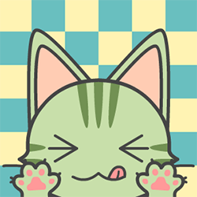

★小町（KOMACHI・♀）

出生不到2個月就到家的貓姐姐。
從出生就是養在溫室裡的花朵，所以非常膽小怕生。因為太怕生，只要聽到門鈴聲就會躲起來，所以就算是來我家的客人也難以見到。
介紹一下我家的偶像貓咪們！
歡迎光臨本站。
這裡是介紹我家貓主子姐妹的曬貓網站，有大量的可愛相片。
※未經許可，請勿擅自複製轉載。
出生不到2個月就到家的貓姐姐。
從出生就是養在溫室裡的花朵，所以非常膽小怕生。因為太怕生，只要聽到門鈴聲就會躲起來，所以就算是來我家的客人也難以見到。

為了讓小町有個伴，在1年後抱回來貓妹妹。
原本是在埼玉縣飯能市的煤礦場出生長大的小野貓。和小町不同，是個性活潑親人，愛吃、愛玩、愛睡的元氣寶寶。
